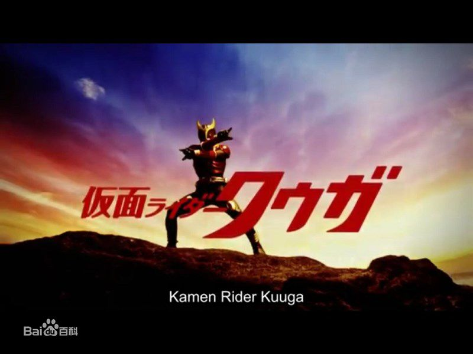
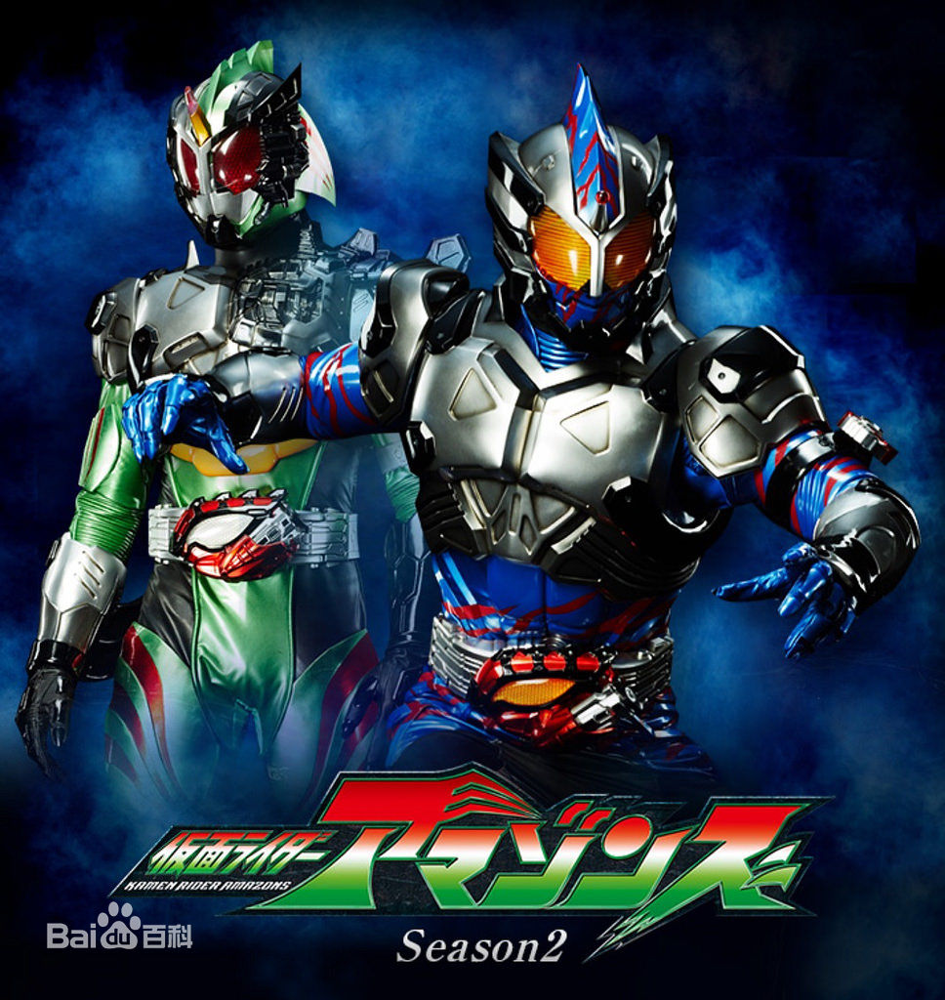

石森章太郎
《假面骑士》系列是由石森章太郎首创、东映株式会社制作的日本特摄系列英雄故事，至今共有33位主角骑士。 首部《假面骑士(初代)》于1971年4月3日播出后，受到各个年龄层观众的喜爱，并引申出更多的假面骑士后续作品。 石森章太郎于1998年1月28日去世后，东映株式会社所创作的平成假面骑士系列作品均会注明原作“石森章太郎”来纪念他。
假面骑士划分为昭和骑士和平成骑士两大类。自首作《假面骑士(初代)》到《假面骑士J》，都是有关进行改造手术的改造人与邪恶组织对抗的故事，他们被归类为昭和假面骑士。而由《假面骑士空我》起的假面骑士，被归类为平成假面骑士。
《假面骑士空我》（日语：仮面ライダークウガ），一般亦称作“假面骑士Kuuga”，是日本朝日电视台及东映株式会社联合制作、播映的特摄剧集。于2000年1月30日至2001年1月21日播放，共49集，由石田秀范等执导，小田切让及葛山信吾等主演。故事讲述由主角五代雄介变身而成的假面骑士空我及日本警方，合力对抗以杀戮为乐的古朗基怪人（未确认生命体）。本作并于2002年获颁第33届日本“星云赏”电影戏剧部门，媒体部门奖。
《假面骑士Kabuto》（Masked Rider Kabuto），平成骑士系列的第7弹，也是假面骑士诞生35周年作品。由于是纪念作，所以再次采用昆虫造型（巨型甲虫角日语KABUTOMUSHI）的设计，配合如《假面骑士555》般充满金属机械感，当中新颖的战斗场面采用了有如Matrix的拍摄手法，大量CG增加了速度感及观感。超速战斗成为了本作的卖点，骑士和怪物能在在超高速形态下战斗！
rider
rider
rider
rider
rider
| 表头 | 表头 | 表头 |
|---|---|---|
| 表内单元格 | 表内单元格 | 操作 |
| 表内单元格 | 表内单元格 | 操作 |
| 表内单元格 | 表内单元格 | 操作 |
| 表内单元格 | 表内单元格 | 操作 |
| 总计 | 1000 | |